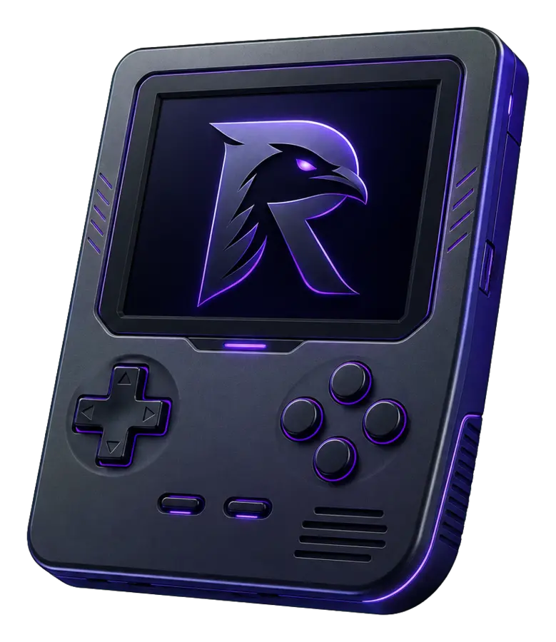

Avancé
Game Boy
CPU LR35902, PPU, audio quatre canaux, interruptions, timers, DMA et contrôleurs de cartouche classiques.
- Profils d’écran monochrome
- MBC1, MBC2, MBC3 et MBC5
- Sauvegardes brutes et RTC
RavenEmu réunit la Game Boy, la Game Boy Color et la Game Boy Advance dans une application Android conçue en Kotlin. Chaque moteur est développé pour le projet à partir de documentation technique publique.
APK de test signé par une clé dédiée et stable, reconstruit à chaque évolution de main.
Empreinte du fichier, du certificat et commit source publiés à chaque version —
comment vérifier.

Les cœurs partagent une API commune, sans dépendre les uns des autres ni de la couche Android.
CPU LR35902, PPU, audio quatre canaux, interruptions, timers, DMA et contrôleurs de cartouche classiques.
Le cœur Game Boy étend son matériel avec les banques couleur, les palettes, le HDMA et la double vitesse.
Nouveau cœur ARM7TDMI dédié avec modes ARM et Thumb, vidéo 240 × 160, DMA, timers et audio Direct Sound.
Le moteur Game Boy Advance reste en développement. La compatibilité avec les jeux commerciaux et les performances sur appareils Android doivent être vérifiées jeu par jeu.
Filtre les cartes pour découvrir les moteurs, l’application Android et les outils du projet.
Les cœurs avancent selon un budget de cycles contrôlé et produisent leur framebuffer via le contrat commun.
Sortie PCM, rééchantillonnage interne et synchronisation avec la couche audio Android.
Recherche, filtres par console, empreintes, pochettes et accès aux fichiers via le sélecteur Android.
Disposition tactile configurable, profils portrait et paysage, manettes physiques et gâchettes GBA.
Fichiers .sav bruts lorsque possible, sauvegarde automatique et états instantanés versionnés.
Les moteurs Kotlin/JVM sont isolés de l’interface Android et testables sans émulateur Android.
Les tests produisent leurs propres programmes et données, sans intégrer de ROM commerciale au dépôt.
Issues, pull requests, revues techniques, règles de sécurité et code de conduite sont centralisés ici.
Aucune fonctionnalité dans cette catégorie.
L’application sélectionne le moteur adapté à la ROM. Les cœurs restent purs JVM, tandis que l’interface, le stockage et le rendu vivent dans des modules Android dédiés.
Parcourir le code sourceLes moteurs JVM peuvent être testés sans SDK Android. La construction de l’application nécessite le SDK Android configuré localement.
./gradlew jvmTest./gradlew test lint assembleDebug./gradlew bundleReleaseLes contributions techniques, documentaires et de validation sont bienvenues lorsqu’elles respectent l’originalité et la sécurité du projet.
Consulter les issues existantes ou ouvrir une proposition claire avant un chantier important.
Conserver les frontières des modules, documenter le matériel et éviter les allocations dans les chemins chauds.
Ajouter des tests synthétiques reproductibles et exécuter les tâches Gradle adaptées.
Décrire le comportement visé, les références publiques, les résultats et les limites restantes.
Une vulnérabilité ne doit pas être publiée dans une issue publique avant coordination d’un correctif.
Les échanges doivent rester techniques, inclusifs et constructifs. Les attaques personnelles, le harcèlement et la divulgation de données privées ne sont pas acceptés.
Chaque préversion publie l’empreinte SHA-256 du fichier, celle du certificat de signature, le commit source et le nom du package. Les deux commandes suivantes se lancent depuis les outils Android :
sha256sum -c RavenEmu-test.apk.sha256
apksigner verify --print-certs RavenEmu-test.apkL’empreinte du certificat doit être c439aed3f5210f88d92f435f949614cacbb4105ed7967a246abfa051d59feee1. Elle est la même pour toutes les versions Test : c’est ce qui permet de mettre à jour l’application sans la désinstaller. Si une autre valeur apparaît, l’APK ne vient pas de ce dépôt — ne l’installe pas.
Cela dépend du message, et la distinction est importante.
Attendu : l’autorisation d’installer depuis la source utilisée (navigateur, gestionnaire de fichiers), et les messages de Play Protect du type « application non vérifiée », « développeur inconnu » ou « analyse impossible ». Ceux-là signalent que Google ne connaît ni le certificat ni le développeur, pas qu’un problème a été trouvé. Tout APK distribué hors du Play Store les déclenche.
À ne jamais ignorer : « application dangereuse », « application nuisible bloquée », « cette application peut endommager votre appareil ». C’est un verdict de détection, pas une absence d’information. N’installe pas, supprime le fichier, et signale-le dans une issue en précisant l’adresse de téléchargement.
La vérification d’empreinte prouve qui a signé le fichier, pas que son contenu est inoffensif. Elle répond aux messages du premier groupe, jamais à ceux du second. Ne désactive pas Play Protect de façon générale, et n’accorde l’autorisation « sources inconnues » qu’au moment de l’installation.
Non. Le dépôt et l’application ne distribuent aucun BIOS, aucune ROM et aucun contenu protégé. Utilise uniquement des copies que tu es autorisé à employer ou des homebrews librement distribués.
Non. Il est en développement actif. Les fonctions, les performances et la compatibilité commerciale doivent encore être validées sur différents appareils.
Non. Les moteurs RavenEmu sont écrits pour le projet à partir de documentation technique publique. Une contribution ne doit pas copier, traduire ou adapter le code d’un autre émulateur.
RavenEmu est conçu sans télémétrie et sans téléversement de ROM ou de sauvegarde. Les fichiers restent sous le contrôle de l’utilisateur.
Explore le code, teste les moteurs, documente un comportement matériel ou propose une correction ciblée.